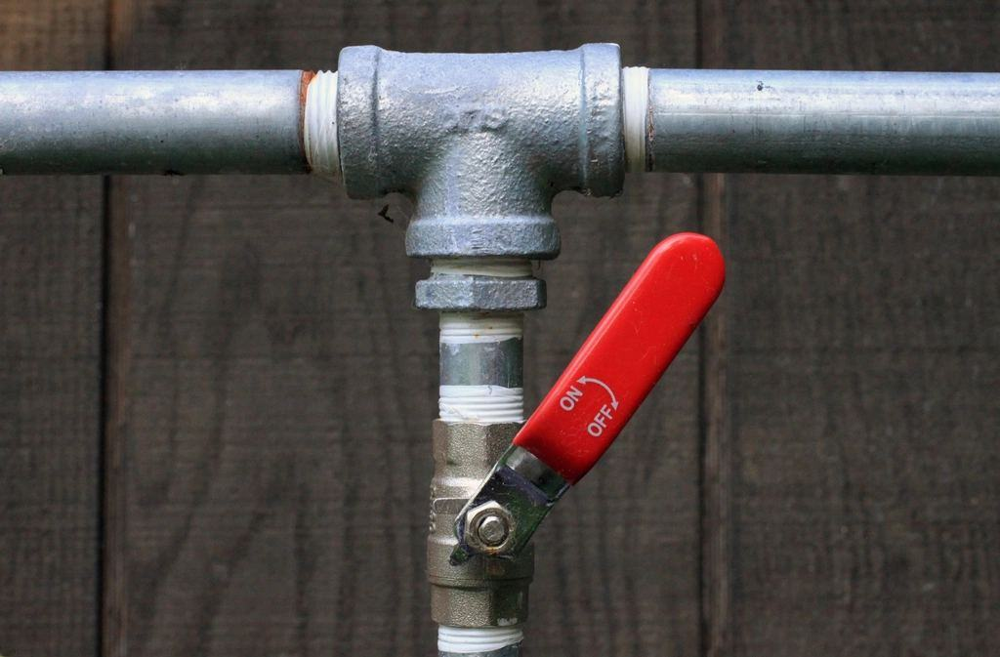
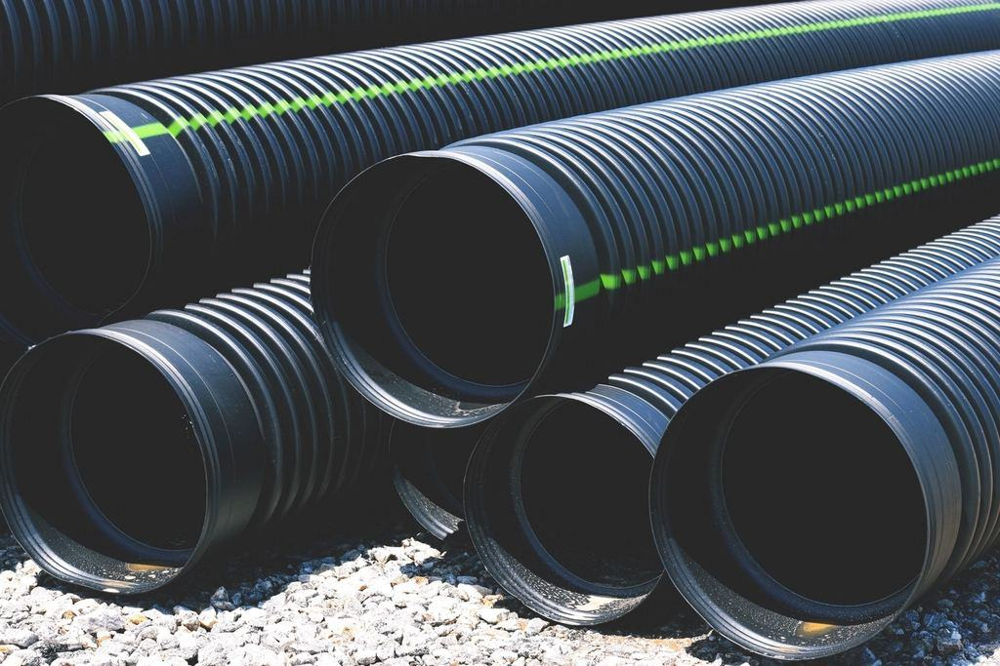

Referenser
Ett urval av uppdrag vi har utfört.
- 2025

Brf Rosenlund
Filmen visade att åtta av tio stammar höll i minst tio år till.
- 2025

Kvarteret Gjuteriet
Vi hittade elva felaktiga upplåsningar som entreprenören åtgärdade innan slutbesiktning.
- 2026

Växjö kommun skolfastigheter
Filmning och digital karta över avlopp i 23 skolor, klart till våren 2027.
- 2025

Villa i Bankeryd
Rotinträngning i servisledningen upptäcktes – köparen fick 85 000 kronor i prisavdrag.
- 2024

Industrihus på Torsvik
Läckande tappvattenledning under betonggolv lokaliserad med spårgas på 40 centimeters när.
- 2024

Värnamo Hyresgårdar
Filmning av 140 relinade lägenheter året innan garantitiden gick ut.
Beslut som blev bättre
Tomas R., ordförande · Jönköping”Vi var på väg att skriva på ett stambyte för 38 miljoner. Rapporten från Ledningsbild gjorde att vi relinade två stammar i stället.”
Josefin och Ali M. · Bankeryd”Rapporten kom två dagar före kontraktsskrivningen och gav oss ett prisavdrag som betalade den tio gånger om.”
Annelie S., förvaltare · Värnamo”Vi anlitar dem för att kontrollera våra entreprenörer. Det har gjort alla mer noggranna – även entreprenörerna.”